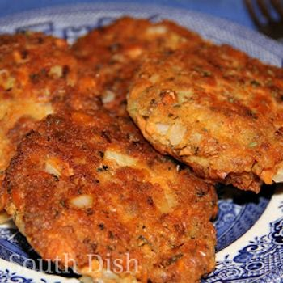

Southern Fried Salmon Patties

The best Southern Fried Salmon Patties you will ever make!
When I was a small girl growing up on my grand-parents farm, my GiGi always brought out this dish for most family gatherings and I have always loved it!
Ingredients:
- 2 cans of Pink Salmon
- 1 large yellow sweet onion, diced
- 2 eggs
- 15-20 saltine crackers
- Vegetable/Canola oil
- Salt & Pepper
Steps:
- Open and drain cans of Salmon. Pick out most of the small bones and skin and discard them.
- Mix the salmon, onion, and eggs in a large bowl. Then crumble as many saltine crackers in as needed, to absorb excess moisture. Be careful not to remove too much or the patties will not hold together while frying.
- Once the mix seems to have the right consistency, form the mixture into patties
- Heat your oil in a large skillet to about 350 degrees and fry the patties for about 2-4 minutes on each side until golden brown.
- Enjoy!